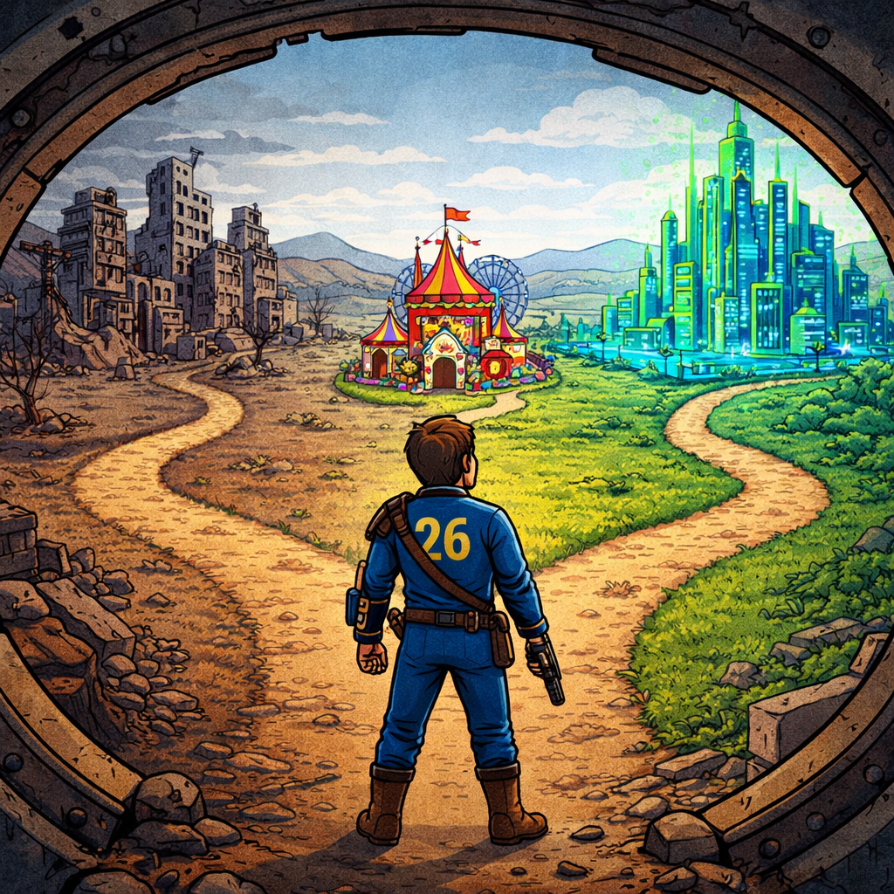

Section IX: Applications and Synthesis · Lesson 05-AS
Future Trajectories and Synthesis
What Does the Future Hold?
In 15 years, what is the state of blockchain?
- The foundation of global digital accountability?
- Supporting niche applications and communities?
- Remembered as a failed technology?

A Spectrum of Futures
| Global infrastructure | Niche ecosystem | Decline / fragmentation |
|---|---|---|
| Shared settlement system | Crypto-native markets | Constrained, fragmented adoption |
| CBDCs, tokenized assets, bank integration | DeFi, NFTs, DAOs, on-chain communities | Regulation, technical limits, competing systems |
| Broader institutional adoption | Strongest inside crypto itself | Uneven relevance across sectors and regions |
These futures are not mutually exclusive. Which paths expand depends on the incentives blockchain creates and the limits it cannot easily escape.
Future 1: Global Settlement Layer
- Blockchain integrated into financial infrastructure
- Banks, CBDCs, and stablecoins interconnected
- Cross-border payments become faster and more programmable
- A shift away from the original tenet of decentralization
- Supported by the Bank for International Settlements (BIS), central-bank pilots, and tokenization advocates
Future 2: Specialized Crypto Ecosystem
- Blockchain used in crypto-native environments
- Crypto-native = systems whose users, assets, and incentives mostly stay on-chain
- DeFi, NFTs, tokenized assets, and on-chain communities
- Limited integration with traditional systems
- Technology limits, weak social trust, and geopolitical friction still slow broader adoption
- Often implied by International Monetary Fund (IMF) and World Economic Forum (WEF) views that blockchain may remain useful in bounded niches
Future 3: Decline or Fragmentation
- Blockchain-dependent technologies are overcome by their shortcomings
- Heavy regulation limits growth
- Technical challenges deter future implementation
- Competing and fragmenting systems further reduce relevance
- Most strongly associated with skeptical IMF, BIS, and regulatory critiques
The Real Question
If blockchain is so powerful…
Why isn’t everything using it?
Scalability
Throughput, latency, and cost still limit many real-world uses.
Regulation
States shape who can build, transact, and scale.
Usability
Complexity and error risk still block mass adoption.
The answer is not one flaw. It is accumulated friction across technology, institutions, and users.
Technical Constraints
- scalability limits
- tradeoffs between decentralization, security, and speed
- fee spikes and latency under heavy demand
- scaling layers improve throughput, but add complexity and new trust assumptions
Some barriers are architectural–not temporary.
Human & Economic Constraints
Usability Challenges
- Complex key management
- Risk of irreversible mistakes and predatory practices
- Poor interfaces and opaque requirements
Governance & Incentives
- Protocol changes still require coordination and agreement
- Voting can favor insiders
- Incentives can reward short-term gain over stability
Even perfect code cannot overcome people, incentives, and coordination issues.
External Constraints
- Regulation and compliance shape who can legally build, issue, and transact
- Energy consumption and resource use keep proof-of-work systems on the political agenda
- High price volatility can undermine trust in crypto as money or savings
Image source: Wikimedia Commons, Vogtle NPP

The Cambridge Digital Mining Industry Report estimated Bitcoin’s annual electricity consumption at about 138 TWh as of June 30, 2024, roughly 0.54% of global electricity usage.
Public legitimacy can limit adoption even when the technology works.
Two Powerful Technologies Collide
Artificial Intelligence
- Automates analysis and decision-making
- Finds patterns across large data sets
- Scales action faster than human teams
Blockchain Systems
- Shared rules and records
- Traceable execution
- Shared state across participants
- Verifiable transactions without one central operator
Together, they can amplify both coordination and failure at machine speed.
Opportunities
- Smart contract auditing: AI can review large codebases and flag risky patterns faster than human teams alone.
- Fraud detection and monitoring: models can scan transaction graphs and identify suspicious flows at machine speed.
- Autonomous economic agents: software agents can evaluate conditions and execute on-chain actions continuously.
Near-term opportunities mostly improve monitoring, verification, and automation inside existing systems.
Opportunity: Authenticity and Provenance
- Content authenticity and provenance: blockchain-backed credentials can help certify origin, edits, and ownership in an age of deepfakes.
- Machine-readable provenance chains: AI systems and platforms can check whether media carries trustworthy history rather than relying only on surface realism.
NIST’s 2024 report on synthetic-content risks argues that authentication, provenance, labeling, and auditing tools will be central to distinguishing trustworthy content from manipulated media. In parallel, the C2PA standard promotes Content Credentials so creators and platforms can preserve provenance and edit history. This is one area where blockchain-style integrity records and content credentials could matter well beyond finance.
Risks
AI-driven exploits
Models can scan contracts, wallet patterns, and public code faster than human attackers alone.
Governance manipulation
Agents can optimize bribery, messaging, or voting strategies in token-governed systems.
Automated large-scale attacks
Automation lets one attacker probe many contracts, protocols, or users at once.
AI errors at scale
Hallucinated, brittle, or overconfident systems can cause real on-chain damage if trusted too quickly.
AI does not just strengthen defenders. It also compresses the time between weakness, exploitation, and irreversible loss.
Cryptographically Relevant Quantum Threat
A cryptographically relevant quantum computer is one powerful enough to run attacks such as Shor’s algorithm against today’s public-key cryptography. For blockchain systems, this means possible recovery of private keys from exposed public keys and the forgery of valid signatures.
What is threatened
- ECDSA and similar signatures secure wallet ownership and transaction authorization
- Public-to-private key security assumptions could break if large fault-tolerant quantum machines arrive
- Exposed public keys would be highly vulnerable to these attacks
Why blockchains are hard to patch
- Blockchain trust models rely on cryptography, so this is a system-level problem rather than a single bug
- Migration requires social coordination across wallets, clients, exchanges, and users
- Decentralized communities must agree on upgrades, timing, and standards before the threat becomes urgent
The threat is real, but the harder problem may be coordinated migration before a crisis arrives.
What Can Be Done
- Post-quantum cryptography (PQC): NIST is standardizing algorithms intended to survive quantum attacks.
- Protocol migration strategies: networks need staged upgrades, wallet support, and governance coordination.
- Hybrid cryptographic systems: during transition, systems may combine classical and PQC methods to reduce migration risk.
The Original Vision
“Privacy is necessary for an open society in the electronic age.”
— Eric Hughes, A Cypherpunk’s Manifesto
- Privacy through cryptography
- Decentralized systems
- Resistance to centralized authority

Blockchain began not only as a technical project, but as a political vision of privacy, autonomy, and decentralization.
Why It Mattered
- Early cryptography ideas became money, platforms, and policy experiments
- Each milestone changed how developers, markets, and states understood blockchain
- The pattern is not steady progress, but cycles of launch, hype, failure, and redesign
What Actually Happened
Original Vision
- Permissionless systems
- Privacy by default
- Grassroots participation
Modern Reality
- Institutional adoption
- Regulatory oversight
- Corporate ecosystems
Real-world adoption pressures reshaped blockchain from a pure ideology into a hybrid mix of opportunity, compromise, and constraint.
The result is a system constantly pulled between decentralization and institutional control.
The Core Tension
Decentralization
- Openness and censorship resistance
- Fewer gatekeepers
- Harder for any one actor to dominate the system
Control / Regulation
- Compliance, monitoring, and accountability
- Easier intervention when systems fail
- Easier integration with institutions
These goals are in tension: more control often reduces openness, while more openness often limits control.
When Blockchain Systems Broke
- Mt. Gox: a centralized exchange collapse that showed protocol security does not protect users from custodial failure.
- The DAO: a smart-contract exploit that exposed how code flaws can undermine decentralized systems.
- ICO bubble: speculative fundraising without real products, often ending in losses and later enforcement.
- Terra/Luna: an algorithmic design failure that triggered contagion across the broader crypto market.
- FTX: a reminder that old-fashioned fraud and mismanagement still thrive inside crypto intermediaries.
Key Lessons
Cryptography != trustlessness
Trust shifts into code, operators, and institutions rather than disappearing.
Incentives shape outcomes
Bad incentives can break systems even when the software works as designed.
Security is continuous
Auditing, monitoring, and migration are recurring requirements, not one-time fixes.
The deepest lesson is that blockchain does not escape politics, incentives, or human failure. It reorganizes them.
What Is Blockchain Really?
- Technology: a distributed system for consensus, verification, and programmable coordination
- Political system: a debate over decentralization, control, censorship resistance, and governance
- Financial experiment: a live environment for new assets, markets, incentives, and failure modes
Blockchain’s future depends on how those three dimensions reinforce or constrain one another.
Discussion
- Which future is most likely—and why?
- Where are the biggest risks in blockchain systems today?
- Where are the biggest opportunities to leverage blockchains?
- Is blockchain more political or technical?
- What would need to change for mass adoption?